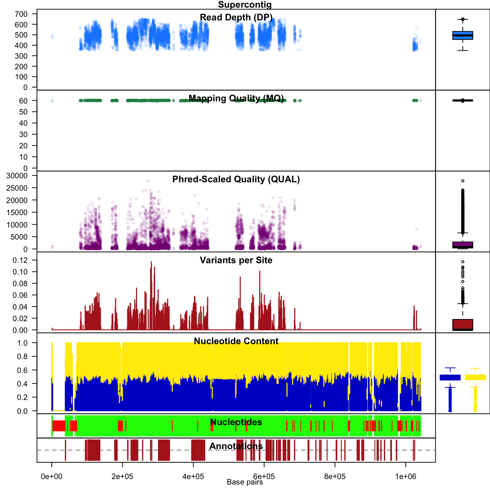
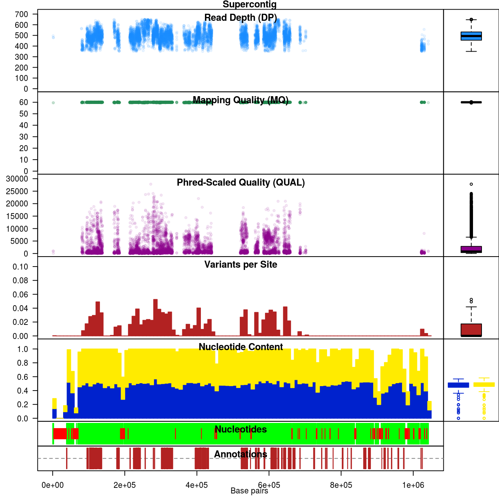
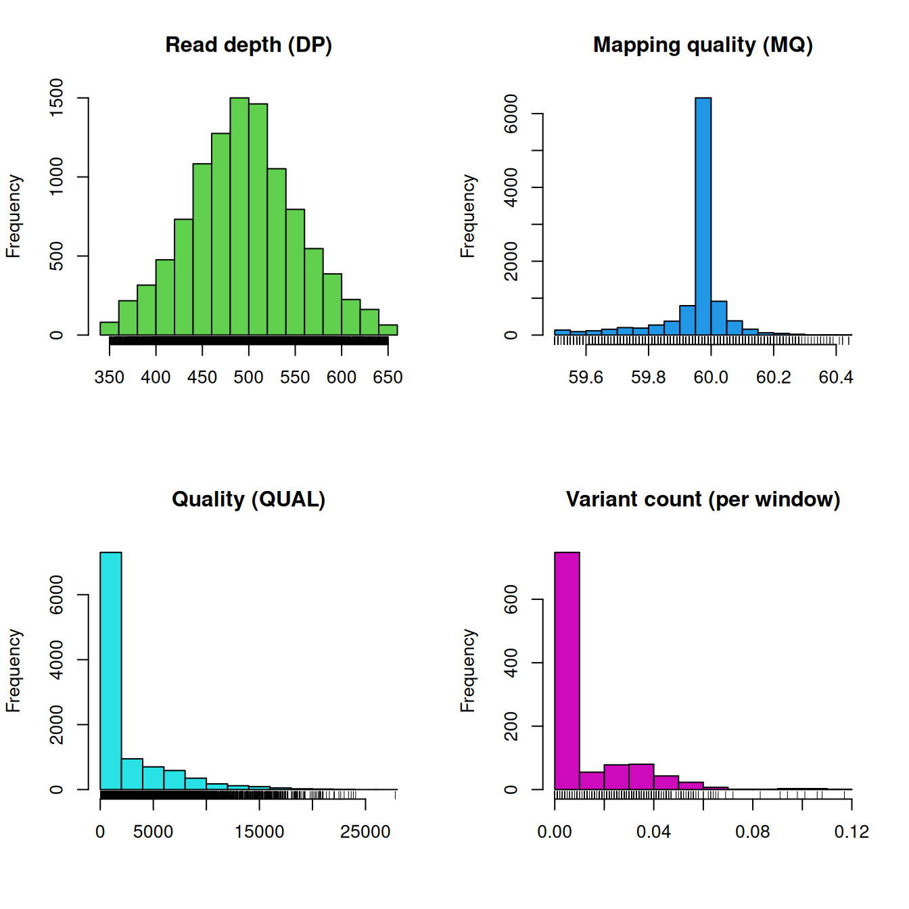

Most variant calling pipelines result in files containing large quantities of variant information. The variant call format (vcf) is an increasingly popular format for this data. The format of these files and their content is discussed in the vignette ‘vcf data.’ These files are typically intended to be post-processed (i.e., filtered) as an attempt to remove false positives or otherwise problematic sites. The R package vcfR provides tools to facilitate this filtering as well as to visualize the effects of choices made during this process.
The input of data was covered in the vignette ‘Introduction to vcfR.’ If you haven’t read this vignette, you can with:
vignette("intro_to_vcfR", package="vcfR")For this vignette, we’ll use the example data provided in the package pinfsc50.
library(vcfR)
# Find the files.
vcf_file <- system.file("extdata", "pinf_sc50.vcf.gz", package = "pinfsc50")
dna_file <- system.file("extdata", "pinf_sc50.fasta", package = "pinfsc50")
gff_file <- system.file("extdata", "pinf_sc50.gff", package = "pinfsc50")
# Input the files.
vcf <- read.vcfR(vcf_file, verbose = FALSE)
dna <- ape::read.dna(dna_file, format = "fasta")
gff <- read.table(gff_file, sep="\t", quote="")
# Create a chromR object.
chrom <- create.chromR(name="Supercontig", vcf=vcf, seq=dna, ann=gff, verbose=TRUE)## Names in vcf:## Supercontig_1.50## Names of sequences:## Supercontig_1.50 of Phytophthora infestans T30-4## Warning in create.chromR(name = "Supercontig", vcf = vcf, seq = dna, ann = gff, :
## Names in variant data and sequence data do not match perfectly.
## If you choose to proceed, we'll do our best to match the data.
## But prepare yourself for unexpected results.## Names in annotation:## Supercontig_1.50## Initializing var.info slot.## var.info slot initialized.chrom <- masker(chrom, min_QUAL=0, min_DP=350, max_DP=650, min_MQ=59.5, max_MQ=60.5)
chrom <- proc.chromR(chrom, verbose = TRUE)## Nucleotide regions complete.## elapsed time: 0.247## N regions complete.## elapsed time: 0.225## Population summary complete.## elapsed time: 0.188## window_init complete.## elapsed time: 0## windowize_fasta complete.## elapsed time: 0.149## windowize_annotations complete.## elapsed time: 0.012## windowize_variants complete.## elapsed time: 0.001The function create.chromR() reports the name of the chromosome (supercontig, contig, etc.) so that we can verify that all three data sources contain the same chromosome. We receive a warning because the names are not identical. Upon visual examination we determine that the names are synonyms and we can proceed.
We can now visualize this data.
chromoqc(chrom, dp.alpha = 22)
In vcfR we refer to this form of plot as a chromo plot. This plot summarizes data from our three data sources. Annotation data is represented on the lowest plot. Features in the annotation file (e.g., gene models, exons, etc.) are represented as dark red rectangles. Above the annotation track is a sequence track. Here called nucleotides are represented in green while uncalled nucleotides (Ns) appear in red. Depending on the quality of your genome, it may include streches of uncalled nucleotides. Above the annotation track is a windowing analysis of G/C content. This track includes marginal barplots to summarize its contents, as do the tracks above it. The next track summarizes the number of variants per window. Above that we see dot plots for quality, mapping quality and read depth.
One of the strengths of R is that it is interactively implemented. This means we can change things fairly rapidly. For example, we can repeat the above the above example using 10 kbp windows instead of the default 1 kbp window. If we become concerned with how our choice of window size affects our analysis, we can change it and visualize it.
chrom <- proc.chromR(chrom, verbose=FALSE, win.size=1e4)
chromoqc(chrom, dp.alpha = 22)
We’ll set the window size back to 1 kbp for the subsequent analyses.
chrom <- proc.chromR(chrom, verbose=FALSE, win.size=1e3)We can also use the function head() to summarize the contents of the chromR object.
head(chrom)## ***** Class chromR, method head *****
## Name: Supercontig
## Length: 1,042,442
##
## ***** Sample names (chromR) *****
## [1] "BL2009P4_us23" "DDR7602" "IN2009T1_us22" "LBUS5"
## [5] "NL07434" "P10127"
## [1] "..."
## [1] "P17777us22" "P6096" "P7722" "RS2009P1_us8"
## [5] "blue13" "t30-4"
##
## ***** VCF fixed data (chromR) *****
## CHROM POS ID REF ALT QUAL FILTER
## [1,] "Supercontig_1.50" "41" NA "AT" "A" "4784.43" NA
## [2,] "Supercontig_1.50" "136" NA "A" "C" "550.27" NA
## [3,] "Supercontig_1.50" "254" NA "T" "G" "774.44" NA
## [4,] "Supercontig_1.50" "275" NA "A" "G" "714.53" NA
## [5,] "Supercontig_1.50" "386" NA "T" "G" "876.55" NA
## [6,] "Supercontig_1.50" "462" NA "T" "G" "1301.07" NA
## [1] "..."
## CHROM POS ID REF ALT QUAL FILTER
## [22026,] "Supercontig_1.50" "1042176" NA "T" "A" "162.59" NA
## [22027,] "Supercontig_1.50" "1042196" NA "G" "A" "180.86" NA
## [22028,] "Supercontig_1.50" "1042198" NA "T" "G" "60.27" NA
## [22029,] "Supercontig_1.50" "1042303" NA "C" "G" "804.15" NA
## [22030,] "Supercontig_1.50" "1042396" NA "GA" "G" "1578.82" NA
## [22031,] "Supercontig_1.50" "1042398" NA "A" "C" "1587.87" NA
##
## INFO column has been suppressed, first INFO record:
## [1] "AC=32" "AF=1.00"
## [3] "AN=32" "DP=174"
## [5] "FS=0.000" "InbreedingCoeff=-0.0224"
## [7] "MLEAC=32" "MLEAF=1.00"
## [9] "MQ=51.30" "MQ0=0"
## [11] "QD=27.50" "SOR=4.103"
##
## ***** VCF genotype data (chromR) *****
## ***** First 6 columns *********
## FORMAT BL2009P4_us23
## [1,] "GT:AD:DP:GQ:PL" "1|1:0,7:7:21:283,21,0"
## [2,] "GT:AD:DP:GQ:PL" "0|0:12,0:12:36:0,36,427"
## [3,] "GT:AD:DP:GQ:PL" "0|0:27,0:27:81:0,81,1117"
## [4,] "GT:AD:DP:GQ:PL" "0|0:29,0:29:87:0,87,1243"
## [5,] "GT:AD:DP:GQ:PL" "0|0:26,0:26:78:0,78,1034"
## [6,] "GT:AD:DP:GQ:PL" "0|0:23,0:23:69:0,69,958"
## DDR7602 IN2009T1_us22
## [1,] "1|1:0,6:6:18:243,18,0" "1|1:0,8:8:24:324,24,0"
## [2,] "0|0:20,0:20:60:0,60,819" "0|0:16,0:16:48:0,48,650"
## [3,] "0|0:26,0:26:78:0,78,1077" "0|0:23,0:23:69:0,69,946"
## [4,] "0|0:27,0:27:81:0,81,1158" "0|0:32,0:32:96:0,96,1299"
## [5,] "0|0:30,0:30:90:0,90,1242" "0|0:41,0:41:99:0,122,1613"
## [6,] "0|0:36,0:36:99:0,108,1556" "0|0:35,0:35:99:0,105,1467"
## LBUS5 NL07434
## [1,] "1|1:0,6:6:18:243,18,0" "1|1:0,12:12:36:486,36,0"
## [2,] "0|0:20,0:20:60:0,60,819" "0|0:28,0:28:84:0,84,948"
## [3,] "0|0:26,0:26:78:0,78,1077" "0|1:19,20:39:99:565,0,559"
## [4,] "0|0:27,0:27:81:0,81,1158" "0|1:19,19:38:99:523,0,535"
## [5,] "0|0:30,0:30:90:0,90,1242" "0|1:22,22:44:99:593,0,651"
## [6,] "0|0:36,0:36:99:0,108,1556" "0|1:29,25:54:99:723,0,876"
##
## ***** Var info (chromR) *****
## ***** First 6 columns *****
## CHROM POS MQ DP mask n
## 1 Supercontig_1.50 41 51.30 174 FALSE NA
## 2 Supercontig_1.50 136 52.83 390 FALSE NA
## 3 Supercontig_1.50 254 56.79 514 FALSE NA
## 4 Supercontig_1.50 275 57.07 514 FALSE NA
## 5 Supercontig_1.50 386 57.40 509 FALSE NA
## 6 Supercontig_1.50 462 58.89 508 FALSE NA
##
## ***** VCF mask (chromR) *****
## Percent unmasked: 47.09
##
## ***** End head (chromR) *****The slots of the class chromR are defined in the package documentation.
The VCF format is discussed in the vignette ‘vcf data’. The chromR object includes the vcfR object and all of its data. Some of this information can be quickly explored using the plot function.
plot(chrom)
Here we see the distribution of some quality metrics. The raw read depth and mapping quality have been extracted from the INFO column of the VCF data. The quality is from the QUAL column of the VCF data. And the variant count per window was summarized during the windowing analysis performed by proc.chromR(). The raw read depth appears fairly continuous, an observation which appears consistent with the above chromo plots. Mapping quality appears to be predominantly one value (about 60), this may not have been apparent in the chromo plots. The varaint count per window summarizes the degree of variability we’ve observed along our chromosome. The peak near zero indicates that many windows lack variants.
In this exercise we’ve explored some of the plotting functions provided in vcfR. We’ve also learned how to access some of the information contained in the vcfR data structures so we can visualize and analyze it using other R functions. It is hoped that this provides a foundation for exploring and understanding the contents of VCF files.
Copyright © 2017 Brian J. Knaus. All rights reserved.
USDA Agricultural Research Service, Horticultural Crops Research Lab.